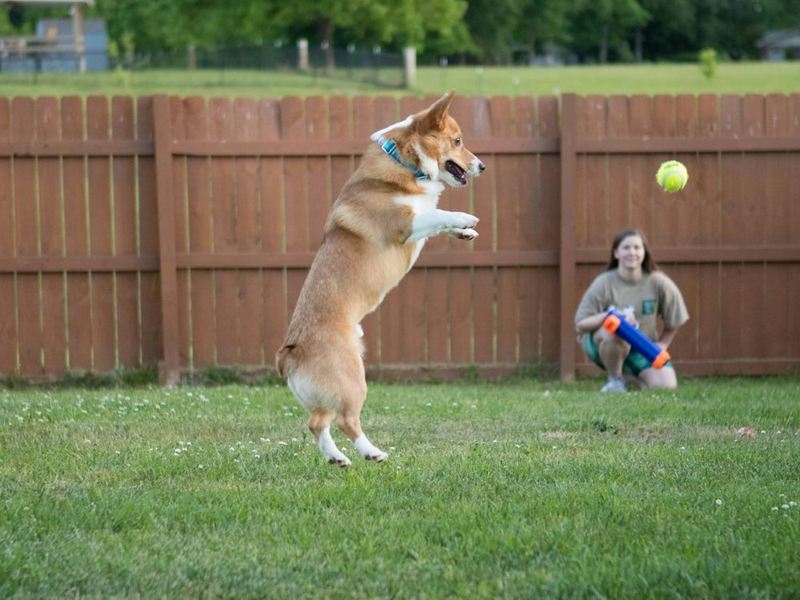

Sundance Park Dog Park Large & small dog areas
- Fenced Not stated by the city
- Water Not stated by the city
- Shade Not stated for the dog park (the park has large shaded playgrounds and numerous ramadas)
- Small-dog area Yes — the city lists a “dog park for large and small dogs”
- Restrooms Not stated for the dog park (the 2023 Phase Two expansion added restrooms to Sundance Park)
- Hours Dawn–10 p.m. daily; on Wednesdays the dog park doesn’t open until 2 p.m. (maintenance)
Buckeye’s only city dog park is a large, grassy area next to Sundance Park “with features for dogs of all sizes to get a workout and socialize,” per the city, with space for large and small dogs. It’s closed until 2 p.m. every Wednesday for maintenance. The surrounding park has a three-acre fishing lake, a seasonal splash pad (April 1–October 31), lighted fields and sand volleyball courts, basketball courts, shaded playgrounds, and rentable ramadas. The city doesn’t publish fencing, water, or shade details for the dog area itself, so those are marked “Not stated.” City of Buckeye: Parks and Facilities.